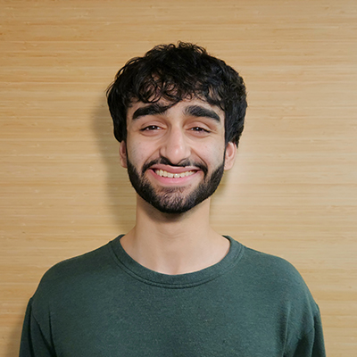

|
 💻 GitHub 📚 Google Scholar 📄 CV 📧 ashiq [at] wisc [dot] edu |
I am a senior undergraduate at the University of Wisconsin-Madison studying mathematics and computer science, working with Prof. Grigoris Chrysos. My research interests are in reliable, private, and secure machine learning and statistics. In particular, I focus on uncertainty quantification, adversarial/distributional robustness, certified unlearning, and differential privacy. I am especially interested in studying the trustworthiness of methods relevant to robotics (flow-based generative models, reinforcement learning, etc.) and scientific discovery (equivariant networks, neural operators, etc.). Previously, I worked with Yeyu Wang and the Epistemic Analytics lab on learning analytics. Specifically, I worked as a software engineer for the ENA webtool and associated R packages (TMA, rENA, etc.). I also helped apply TransModal Analysis (TMA), a multimodal learning analytics framework, to several projects in clinical simulation, AI-assisted education, and more. I am currently applying to Ph.D. programs for Fall 2026 and to industry research internships for Summer 2026. Please feel free to reach out if you believe I would be a good fit. |